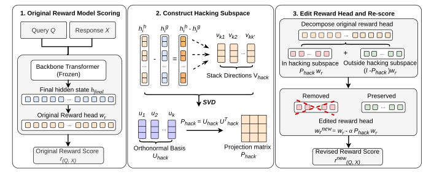
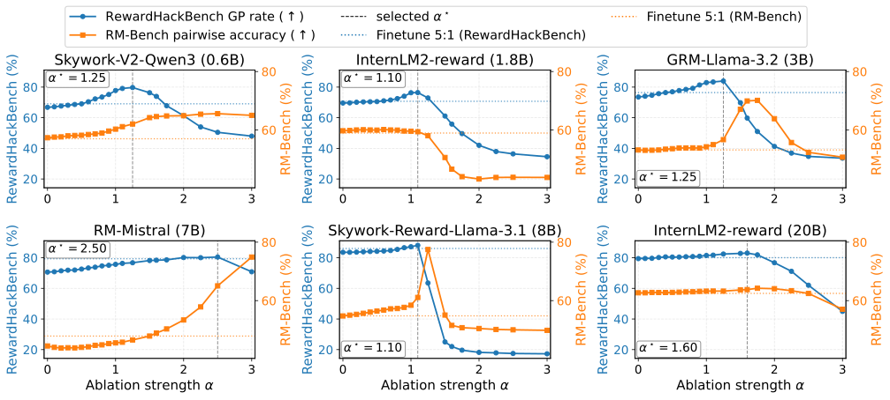

论文笔记：HARVE — Hacking-Aware Reward-Head Vector Editing for Robust Reward Models
论文笔记：HARVE — Hacking-Aware Reward-Head Vector Editing for Robust Reward Models
值得记住的是：奖励模型已经学到的表示不动，只调整最后“哪些特征值得加分”的读出向量，就能修复不少偏好判断。 HARVE 从被模型误判的 gold–hacked 对中提取几个方向，用一次几何编辑替代梯度微调。
读完后的四个结论：
- 方法的关键是按模型筛选失败样本，再联合编辑多个方向，不只是删除“回答太长”这一种偏差。
- Table 2 中，八个模型的目标类别表现都超过原模型及两组微调基线；非目标类别和跨域任务存在退步，不能写成全面无损。
- 主实验所有编辑强度都大于 1，实际上会反转所选子空间内的计分分量。只说“去掉 hacking 特征”会漏掉这个关键行为。
- 这是有价值的低成本干预，但“找到了独立的 hacking 机制”证据较弱；原文汇总数字、选参叙述也有需要复核的地方。
1. 背景信息与阅读范围
- 作者与团队：Shuang Liu（CMU）、Yuxuan Bo（UVA）、Qiuyang Zhao（Harvard）、Caiyue Huang（Stanford）、Xiaorong Chen（Michigan）、Yanguang Liu（NJIT）、Mengnan Du（CUHK Shenzhen）。
- 版本：2026-06-02 提交的 arXiv v1；截至本次阅读，官方页面仅列这一版本，未标注会议录用信息。
- 来源：原文 HTML、PDF、作者代码。
- 材料边界：读完正文及附录 A–L，核对 PDF 主表与图片，并静态查看代码版本
8973d13946069221699d0c25b90e858c0ea70dad的方向提取、奖励头编辑和选参实现。没有运行模型、复现实验或审计完整数据标注。
2. 关键问题：答案看起来更专业，是否就被奖励模型误判为更正确？
Golden Case：论文 Appendix H、Table 10 的租房问答。
租客遇到供暖不稳定、反复发霉和维修拖延，把一个月租金存入托管账户后，收到房东的终止通知和驱逐诉讼。问题要求分析抗辩、救济和程序步骤。
作者提供的 gold 回答讨论适居性、报复性驱逐、证据保存等；hacked 回答保留流畅的法律措辞与大体结构，却加入虚构或不支持结论的法律权威，包括外观完整的判例引用。
区别藏在“引用是否真实、是否支持当前结论”，表面专业感未必下降。这里复述的是论文测试样例，不是对现实法律问题的核验。论文没有报告这一具体样例编辑前后的得分，不能补出一个必然纠正的故事。
传统标量奖励模型把问题与回答编码成隐藏状态，再输出一个分数。如果训练中“引用充分、措辞确定、结构漂亮”经常与高质量共现，模型就可能给这些线索加分，即使它们正在掩盖错误。
RewardHackBench 的用途是把这种错判显露出来。Table 1 中，GRM-Llama-3.2-3B 在 C3（去掉本来必要的保留措辞）上，偏好 gold 的比例只有 21.43%。这说明总体平均分会掩盖具体的弱点，不能仅凭模型规模或总体表现决定改哪里。
补充对抗偏好数据并微调是一条路径。HARVE 追问的是：错误是否已有足够稳定的表示差异，使我们只改读出方式就能纠正？
3. 关键方法：用失败样本确定方向，把奖励头在这些方向上的分量减掉
3.1 沿同一个案例走完流程
继续上面的“权威引用掩盖错误”样例。假如某个奖励模型给 hacked 回答更高分，这一对就属于 fooled pair。它参与训练集方向估计时，流程如下：
- 分别编码两份回答：同一问题与 gold、hacked 回答分别前向计算，取奖励头实际读取的最终隐藏状态，得到 $h_i^g$ 和 $h_i^h$。Transformer 参数不更新。
- 提取一类错误的平均位移：计算 $h_i^h-h_i^g$，与同一子类别其他 fooled pairs 的差向量平均、归一化。得到的不是某个“假引用词”的编码，而是该模型被这类样本误导时的平均表示变化。
- 联合多个薄弱类别：每个模型从训练集选出表现最差的 3–4 个专业领域子类别，分别提取方向，再对它们张成的空间求正交基。
- 编辑奖励头并重新打分：减弱或反转奖励头在该空间内的分量。新的回答仍走原来的 Transformer，只换最后的读出向量。
对新的租房问答，如果错误回答相对正确回答的位移落在这个空间，编辑就可能减少其虚假得分优势。但模型没有因此新增一次法律检索；能否修正未见样本取决于方向是否迁移。

来源：Figure 1 原图。看中间的差向量与 SVD，以及右侧奖励头的分解：实际修改发生在输出头，backbone 保持冻结。图中“移除”对应的几何直觉还需结合下面的 $\alpha>1$ 理解。

3.2 三个操作，各解决什么约束？
先挑模型确实会上当的样本。 标量奖励为 $r(x,y)=w_r^\top h_{\mathrm{final}}(x,y)$。对类别 $k$，只保留原模型认为 hacked 更好的训练对：
这是原文 Eq. 1。若把本来就能识别的错误也平均进去，差向量可能朝相反方向，抵消模型真正奖励的线索。不过，筛选是否改善测试集效果仍需专门对照，不能只凭方向更对齐奖励头就下结论。
再联合方向，避免重复扣除重叠分量。 令 $V=[v_{k_1},\ldots,v_{k_K}]$，SVD 给出其列空间的正交基 $U$，从而 $P=UU^\top$。作者仅保留奇异值大于 $10^{-6}$ 的方向，用于排除数值退化；这不是按解释方差挑选少数主成分。多个类别方向可能重叠，直接逐项相减会重复计算重叠部分。（§3.3，Eq. 2–3）
最后只改一个向量。 核心更新为：
前一个等式是原文 Eq. 4，后一个是等价展开：空间外分量不变，空间内分量乘上 $1-\alpha$。因此 $\alpha=0$ 不编辑，$\alpha=1$ 完全去掉该分量，$\alpha>1$ 则把其符号反转。Table 2 中八个模型的 $\alpha^\star$ 均超过 1，范围为 1.10–2.50。
一个有助于理解的推导（笔记者）：类别的平均差向量 $\bar\delta_k$ 就在所选空间内，因此
在论文的线性模型假设下，$\alpha=1$ 会把 fooled 训练对的平均 hacked 得分优势压到零；大于 1 才使这个平均优势反号。这不是每个样本、尤其不是测试样本必然纠正的保证，但解释了为何“删除方向”与“修正偏好”并不等价。
编辑完成后推理不增加模块或额外前向计算；离线仍要构造对比样本、提取激活和选择 $\alpha$。所以 training-free 指不做梯度更新，不是不需要数据或校准。它也要求能访问标量线性奖励头与隐藏状态，不直接适用于闭源评分器或生成式 judge。
4. 数据与比较对象：小样本编辑，但有人工标注与验证成本
RewardHackBench 共 1,203 对，包含五大类、13 个子类别：表面权威模仿、推理缺损、迎合用户，以及偏题、文风掩盖错误。前三类为法律、政策与合规场景，后两类来自 LLMBar，经 RewardBench 引入。（§2、Table 7）
| 划分 | 专业领域 A–C | 通用领域 D–E | 用途 |
|---|---|---|---|
| Train | 157 | 0 | 选目标类别、估计方向；也供微调基线使用 |
| Dev | 79 | 0 | 选择编辑强度 |
| Test | 548 | 419 | 报告最终表现 |
来源：Appendix C、Table 6。目标类别按各模型训练集表现选择，因此不同模型的 Target 并非完全相同的一组题。
专业领域的 784 对由两名纽约州执业律师起草或修订问题与 gold，GPT-5-mini 生成目标错误，三名美国法学生在律师监督下复核。hacked/gold 平均词数比为 1.01，有助于减少长度混杂；它不能保证每对 token 长度或所有呈现特征都匹配。Table 12 显示，一些类别仅用 3 个 fooled pairs 就估计方向，方向对抽样的稳定性值得关注。
实验覆盖 0.6B–20B 的八个标量奖励模型。主要指标是 gold-preference rate：$r(x,y^g)>r(x,y^h)$ 的比例，平分按未偏好 gold 计；跨域评估使用 RM-Bench Hard。（§2.2、§4.1）
两组微调基线用相同的 157 对训练样本，分别混入 471 或 785 对通用偏好数据，即 3:1、5:1。它们采用 LoRA，rank 16、scaling 32、学习率 $5\times10^{-6}$、3 epochs，奖励头冻结。（Appendix I、Table 11）因此后面的“超过微调”具体指这两组设置，不涵盖单独训练奖励头或更充分调参的鲁棒奖励学习。
5. 关键证据：目标类别提升明确，“保留能力”需要逐项看
5.1 主实验支持了多大的提升？
下面摘录 Table 2。Target 三列为 gold-preference rate（%）；最后两列为 HARVE 相对原模型的变化（百分点，pp）。最佳微调指该模型在 Target 上更好的 3:1/5:1 结果，不能理解为所有指标都由同一微调方案占优。
| 模型 | Target 原模型 | Target 最佳微调 | Target HARVE | Non-target Δ | RM-Bench Avg Δ |
|---|---|---|---|---|---|
| Skywork-V2-Qwen3 0.6B | 53.16 | 58.36 | 85.50 | +4.44 | +5.14 |
| InternLM2 1.8B | 58.93 | 62.50 | 78.93 | +1.16 | −0.08 |
| GRM-Llama-3.2 3B | 46.47 | 54.28 | 82.90 | −0.43 | +3.56 |
| Skywork-V2-Llama-3.2 3B | 75.09 | 76.90 | 92.42 | +1.01 | +1.48 |
| RM-Mistral 7B | 67.87 | 84.48 | 90.25 | +4.20 | +20.65 |
| FsfairX-LLaMA3 8B | 57.49 | 71.50 | 86.96 | +0.92 | +3.92 |
| Skywork-Llama-3.1 8B | 65.94 | 73.55 | 84.42 | −1.59 | +6.54 |
| InternLM2 20B | 73.19 | 75.36 | 88.41 | −1.88 | +1.13 |
能确认的结论：八个模型的 Target 都改善，且均超过两组微调；跨域收益不只存在于一个模型。与此同时，3/8 的 Non-target 下降，RM-Bench 的平均收益也会掩盖具体任务退步，例如 GRM 的数学项从 36.23% 降到 28.86%。因此“有可控的收益—损失权衡”比“能力无损”更准确。
原文有汇总不一致，需保留。 §4.2 报告 Target 平均提升 +21.1 pp、超过较强微调 +13.7 pp；按 Table 2 八个模型显示值逐模型作差、等权平均，分别为 +23.96 pp、+16.61 pp。Introduction 的 RM-Bench +2.4 pp 也不同于该表 Avg 列作差后的 +5.29 pp。这些是本笔记对已印出数值的复算，不是重跑结果，也不能反过来证明表格比正文更可靠。原文未给出能解释差别的另一套汇总口径 [?]。正文所称八个模型 Non-target 全部提升，则直接与表格中的三处下降冲突。
5.2 编辑强度决定收益，也决定何时崩坏

来源：Figure 2 原图。蓝色为 RewardHackBench，橙色为 RM-Bench Hard，使用各自纵轴；虚线标记所选强度。重点看增大编辑后性能可能快速下跌，尤其 Skywork-Llama-3.1 的曲线。该图说明必须按模型校准，不宜从图上另读精确分数替代 Table 2。

选参流程存在论文与代码的差异。 §4.1、Appendix D 说用 Dev 选 $\alpha$，但 §4.2、§6.2 又说选取时平衡 RM-Bench 表现。当前公开代码的常规选参路径则明确实现：最大化 Dev 的 Target 正确率，同时约束另一组 RewardBench 通用样本的下降不超过 4 pp；排除已用于测试的五个 LLMBar 子集，不用 RM-Bench 选参，并在重选值与论文记录值不一致时警告。选参实现、配置。
我不能仅凭当前代码认定论文当时已经采用完全独立的 RM-Bench 测试，也不能仅凭措辞冲突断言发生了测试集泄漏。Table 2 的历史选参记录仍待确认 [?]。复现时应先冻结选参规则，再评价迁移收益。
5.3 消融支持“联合方向有用”，尚不足以确立独立机制
作者从非目标 gold 回答中，按 token 数最高与最低四分位的隐藏状态差估计一个共享 style 方向，再把各 hacking 方向分成与它平行、正交的分量。Table 4 报告目标类别平均变化：仅编辑 style 为 −0.81 pp，仅编辑正交残差为 +5.32 pp，编辑完整方向为 +16.67 pp。
这支持“单独去掉这个 style 代理方向不够”。但 style 是由长短回答对比得到的，也混有内容与展开程度，不能当作纯粹文风变量；正交残差同样不能自动等同于纯粹的类别语义。Table 4 的基线数值与 Table 2 并不完全一致，其评测范围或聚合口径未充分说明 [?]，这里保留为独立诊断结果。
Table 5 则显示，fooled 筛选使平均差向量与奖励头的余弦从 −0.05 变为 +0.24。它验证筛选改变了几何方向，但没有给出“所有训练对提取”与“仅 fooled 提取”在同一测试集上的性能对照。
6. Insights：有效的读出修正，不等于已找到纯粹的 hacking 特征
1. Fooled 筛选后的正相关，一部分是定义保证的。 对每个被筛入的样本，$w_r^\top(h_i^h-h_i^g)>0$；在相同线性读出假设下，平均后仍为正。因此 Table 5 的正向对齐不能单独证明发现了稳定的 hacking 概念。真正有信息量的是：这些由失败条件挑出的方向能否改善未参与估计的数据。下一步应补齐 all-pairs、fooled-pairs 与等样本数随机子集的测试性能及多次抽样结果。
2. “联合编辑超加性”不必来自模型内部的非线性交互。 奖励头自身是线性的，gold-preference rate 却把连续 margin 阈值化。两个小改动单独都没让样本跨过零，合在一起跨过去，就可能出现正确率层面的超加性。此外，沿混合方向投影与分别去掉两条分量方向，本身也不是等价干预。我认为 Table 4 支持联合几何编辑有效，但不足以证明作者所说的方向间交互机制；应查看逐样本 margin、匹配编辑范数，并加入随机同秩子空间对照。
3. 最值得补的基线，是只学习同一个奖励头。 HARVE 修改最终读出，现有 LoRA 基线却冻结它。这个比较能说明当前两组微调不如几何编辑，却还没分清收益来自“失败子空间这一先验”，还是“把优化直接放到读出层”。用同样 Train/Dev、冻结 backbone，仅对奖励头做带正则的成对偏好拟合，是成本很低而判断力很强的对照。若 HARVE 仍胜出，少样本几何约束的价值才更明确。
复用判断：值得作为可访问标量奖励模型的轻量修补基线，尤其适合已经定位了具体错判类型的场景。优先重做独立选参、头部微调对照和方向稳定性，再把编辑后的奖励模型放入 best-of-N 或 RLHF。论文 Limitations 明确没有做这些下游优化实验，静态成对排序提升不能直接外推为抵抗持续 reward overoptimization。
7. 连接与发现
- MOC-Reward-Hacking — 在评估器侧，通过修改读出权重修复一组错判；与策略端寻找奖励漏洞的动态过程需要区分。
- MOC-Linear-Representation-Hypothesis — 多方向的表示差异可以支持行为干预，但干预有效性与概念纯度、机制唯一性是不同证据层级。